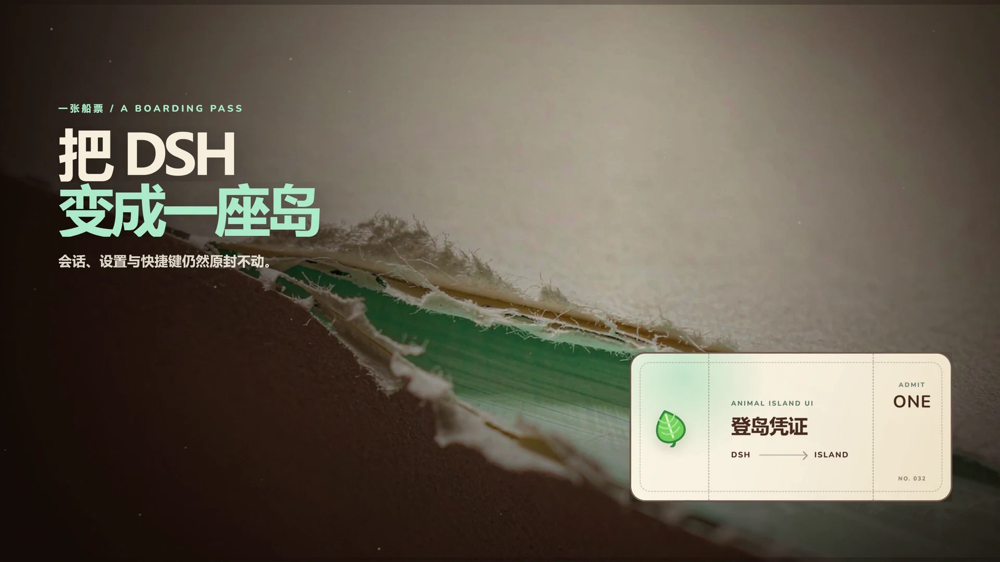
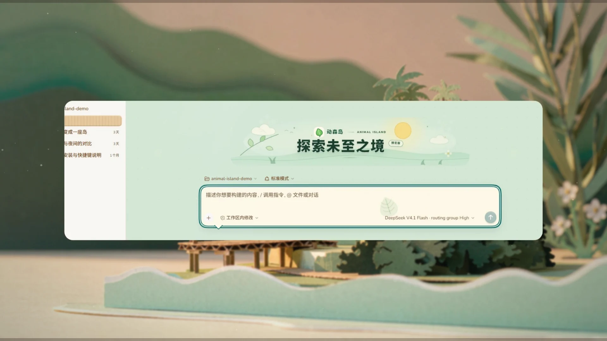
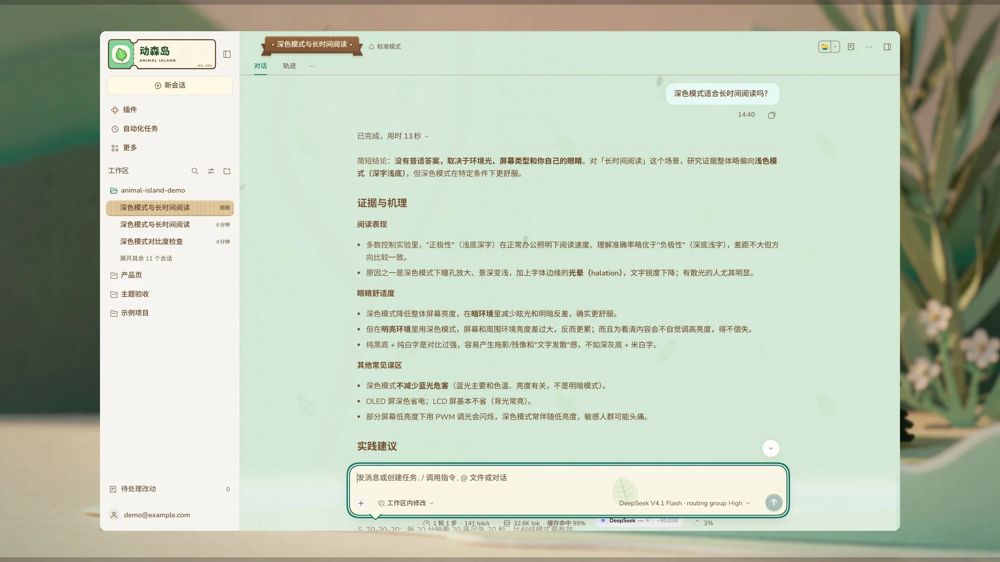
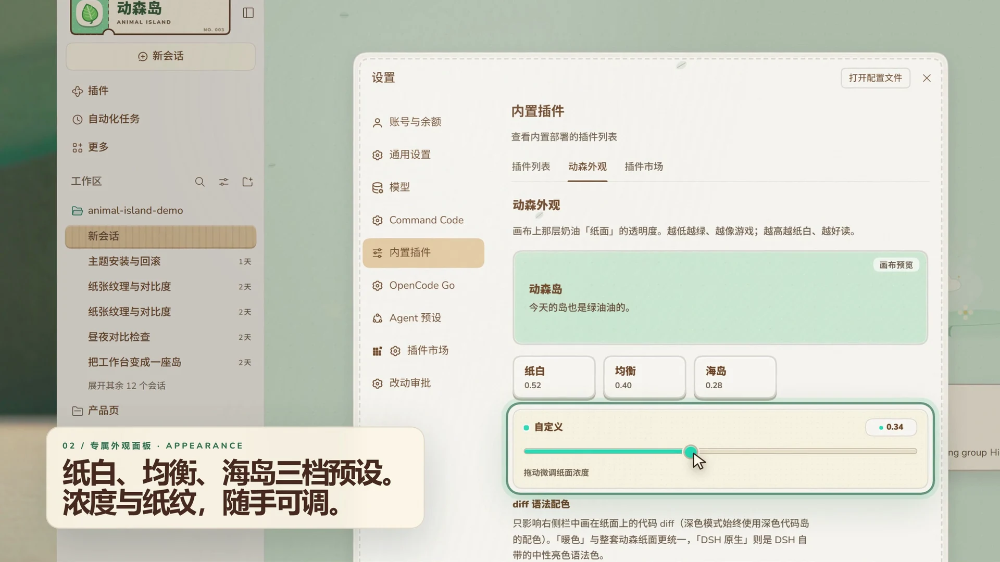
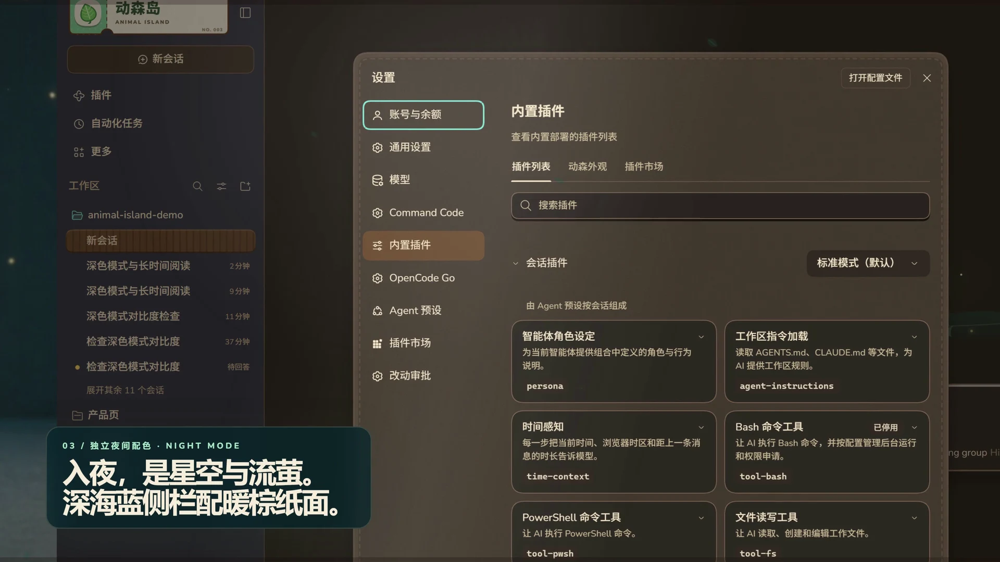
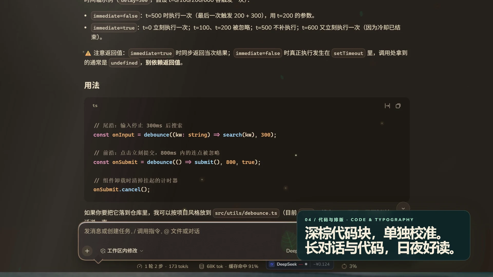
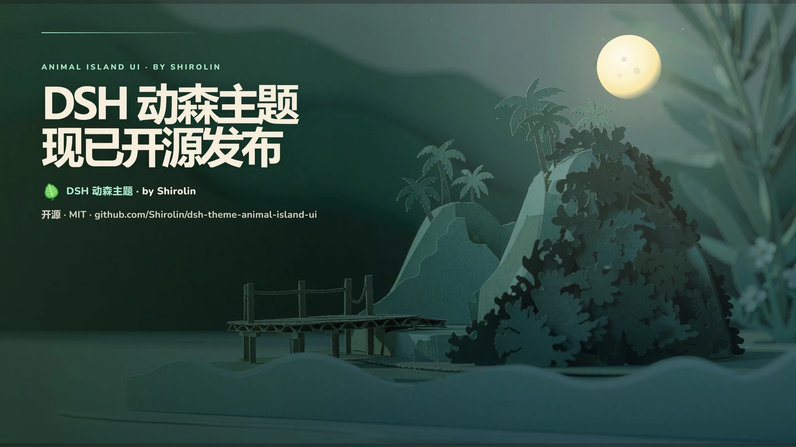

七个连续节拍
纸票负责进入，真实界面负责可信；转场只使用主题自己的物件，不靠随机光效或模板字幕。
-
00:00–00:03

船票
以纸纤维、侧光和细小尘埃建立触感。标题从左下方进入，船票作为真正的登岛物件，而不是装饰卡片。
-
00:03–00:06

撕开
撕纸声与视觉共用票根虚线。沿虚线自上而下撕开，票根与票面分离，完整窗口随后展开，明确建立“从票进入产品”的因果。
-
00:06–00:10.8

工作台
先给完整窗口，再推近原生输入区：点进输入框逐字输入问题并点击发送，等“深度求索中”走完，完整回答落回同一个会话。界面只在裁剪与平移里运动，不做倾斜或透视。
-
00:10.8–00:15.6

外观
三档预设和浓度滑杆成为绝对主角：滑杆被真实拖拽到 0.28。镜头从整组设置推进到控件细节，强调主题生长在 DSH 原生路径里。
-
00:15.6–00:20.1

夜岛
纸叶完成日夜匹配剪辑。夜间不是反色，而是另一套材质、月光与状态色；再从动森外观点进插件列表，换肤覆盖整个设置页，而不只是一个面板。
-
00:20.1–00:24.5

代码
夜色里的真实会话：表格、行内代码与大段 TypeScript 代码块同样保留清晰对比。推近后语法色与纸面纹理同时成立，读代码不靠反色硬撑。
-
00:24.5–00:30

上岸
界面淡出，日夜双岛接棒。最后五秒只留标题、品牌、开源仓库地址与余韵，不放安装步骤，让成片有完整的结束感。